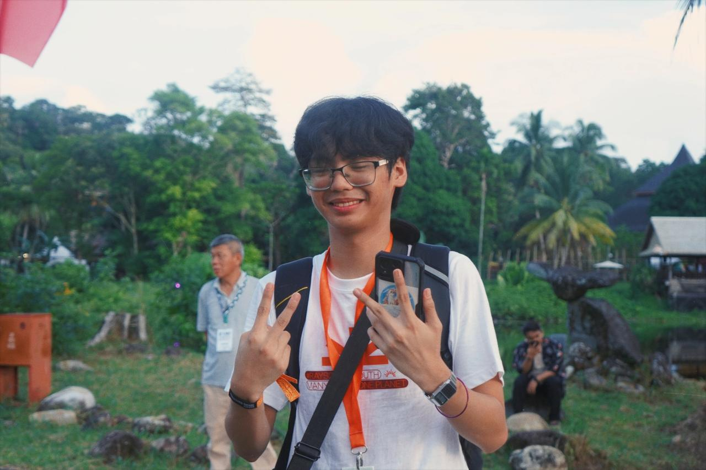

Creative by origin.
Engineering by evolution.
I’m Kerwwyn Gray Gonzales, a Computer Engineering student, maker, visual designer, and youth leader. My work grew from 3D art and multimedia into robotics, embedded systems, fabrication, product design, and socially driven innovation.

I like making ideas tangible.
I started with Blender, visual design, animation, and multimedia. That creative background now informs the way I approach engineering: I care about how a system works, but also how it is understood, experienced, fabricated, presented, and used by people.
At National University Clark, I’m pursuing a Bachelor of Science in Computer Engineering while taking on technical projects, organizational leadership, community work, competitions, and international programs. I’m especially interested in the overlap between embedded technology, robotics, physical product development, assistive technology, and human-centered design.
Rainforest Youth Summit · Kuching, Malaysia
ASEAN Access Fund delegate; participated in the Planet Futures Forum and collaborative sustainability work.
International Delegate · ITS Surabaya, Indonesia
Chosen for a full scholarship to represent NU Clark in an international technology program.
Robothon · ICpEP Philippines
Region III Champion and National 3rd Runner-Up.
Red7TV · Multimedia & Film Arts Internship
Completed an 80-hour internship with a perfect 72/72 student appraisal.
Holy Angel University · Audio Visual Specialist
Co-produced a 3D animated AVP for Foundation Week using Blender and Adobe Premiere.